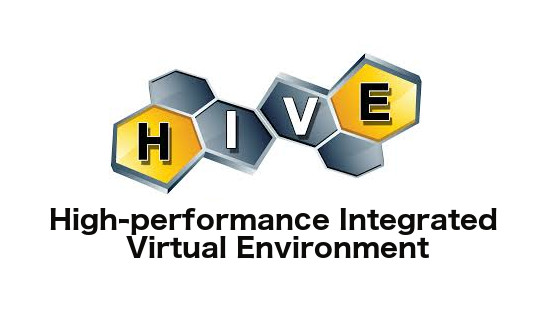
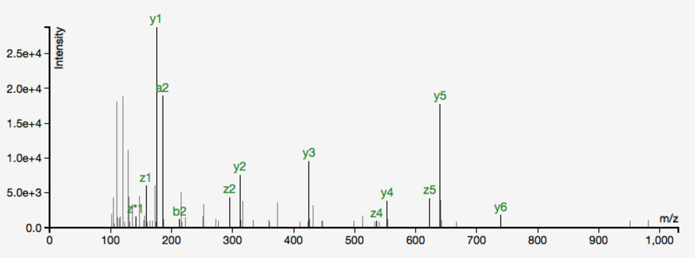

The High-performance Integrated Virtual Environment (HIVE) platform

HIVE is a cloud-based environment optimized for the storage and analysis of extra-large data, such as biomedical data, clinical data, next-generation sequencing (NGS) data, mass spectrometry files, confocal microscopy images, post-market surveillance data, medical recall data, and many others. HIVE provides secure web access for authorized users to deposit, retrieve, annotate and compute on Big Data, and analyze the outcomes using web user interfaces.
BioCompute Objects (BCO)
The BioCompute is FDA funded project to establish a framework for community-based development of standards for harmonization of High-throughput Sequencing (HTS), standardization of data formats, promotion of interoperability, and bioinformatics verification protocols. The BioCompute Object (BCO) was developed in the High-throughput Sequencing Computational Standards for Regulatory Sciences (HTS-CSRS) initiative in the BioCompute Objects Portal (BOP), a web portal to serve as a collaborative ground to encourage a dialogue to facilitate interoperability between different bioinformatic pipelines, industries, and developers. HIVE capabilities have been leveraged to support the development of the BCO. The BCO is versatile and adaptable to other common HTS analysis platforms.
GlyGen
GlyGen (gly-glycobiology; gen-information), is an advanced glycoinformatics resource developed to facilitate discovery in basic and translational glycobiology research along with enhancing the integration of multidisciplinary information from diverse resources. GlyGen includes knowledge about molecular, biophysical and functional properties of glycans, genes, and proteins organized in pathways and ontologies, plus a rapidly growing body of biological big data related to cancer mutation and expression. GlyGen adopts an innovative user-driven approach for implementing, prioritizing and knowledge disseminating tools to address the questions and needs of glycobiology community.
Gut Microbiome Analytic System
 The HIVE team received NSF funding to develop a Gut Microbiome Monitoring System (GutFeeling) as a tool which when used over time will allow users to rectify their dietary (such as consumption of probiotics and prebiotics) and other lifestyle habits and to help restore their normal microbiome. Rapid analysis of the large amount of metagenomic data, a major bottleneck, has been resolved by our group through the development of a novel algorithm and accompanying software called CensuScope. Through analysis of healthy gut microbiome data, we are actively developing a KnowledgeBase (GutFeelingKB) to provide a clearer picture of not only an ideal personalized microbiome but also establish baseline characteristics for each customer. The Mazumder Lab is collaborating with the Milken School of Public Health and Kamtek Sequencing Facility to investigate the relationship between bacterial species commonly present in the digestive tract, diet, physical activity, lifestyle habits, and metabolic risk factors.
The HIVE team received NSF funding to develop a Gut Microbiome Monitoring System (GutFeeling) as a tool which when used over time will allow users to rectify their dietary (such as consumption of probiotics and prebiotics) and other lifestyle habits and to help restore their normal microbiome. Rapid analysis of the large amount of metagenomic data, a major bottleneck, has been resolved by our group through the development of a novel algorithm and accompanying software called CensuScope. Through analysis of healthy gut microbiome data, we are actively developing a KnowledgeBase (GutFeelingKB) to provide a clearer picture of not only an ideal personalized microbiome but also establish baseline characteristics for each customer. The Mazumder Lab is collaborating with the Milken School of Public Health and Kamtek Sequencing Facility to investigate the relationship between bacterial species commonly present in the digestive tract, diet, physical activity, lifestyle habits, and metabolic risk factors.
HIVE-EQAPOL Project on HIVE NGS Data Processing and Analysis
For this project, our group works closely with the External Quality Assurance Program Oversight Laboratory (EQAPOL) team to conduct HIV NGS data analysis and collaborate in terms of analyzing, storing, and tracking HIV NGS Data. Reliable identification of strains is critical for developing new assays, validating assay platforms, assisting regulators to evaluate test kits, monitoring HIV drug resistance, and informing vaccine development. The HIVE tools and platform are used for virus identification, recombination analysis, and clone discovery.
The OncoMX mission is to create an integrated cancer mutation and expression resource for exploring cancer biomarkers. OncoMX is a collaboration between the George Washington University (GW), NASA's Jet Propulsion Laboratory (JPL), the Swiss Institute of Bioinformatics (SIB), and the University of Delaware (UD). The core knowledgebase of OncoMX is derived from BioMuta and BioXpress integrated cancer mutation and expression databases. Normal expression data from Bgee and custom text mining software augment the cancer data to improve functional interpretation of the reported variants and expression profiles. All data are wrapped into the OncoMX database and web portal, mapped to additional functional information from NCI Early Detection Research Network (EDRN) and Reactome. It is expected that the large-scale integration of cancer data and supporting information, provided by OncoMX with direct community feedback, will benefit cancer research by improving synthesis of information and may make earlier detection a reality.
Past Projects
Glycoproteomics Characterization Workflow and Data-Analysis Pipeline for Vaccines and Biosimilars

In this FDA funded project we are extending High-performance Integrated Virtual Environment (HIVE) capabilities through the development and integration of software tools and datasets for comparative analysis of glycoproteins. Glycomic analysis has many angles and has been extensively reviewed in recent literature. We propose to rely on the independent development of the glycomics field and incorporate these approaches in the HIVE pipeline as they mature while we develop a standardized glycoinformatics pipeline that will benefit investigators and regulators at the FDA.